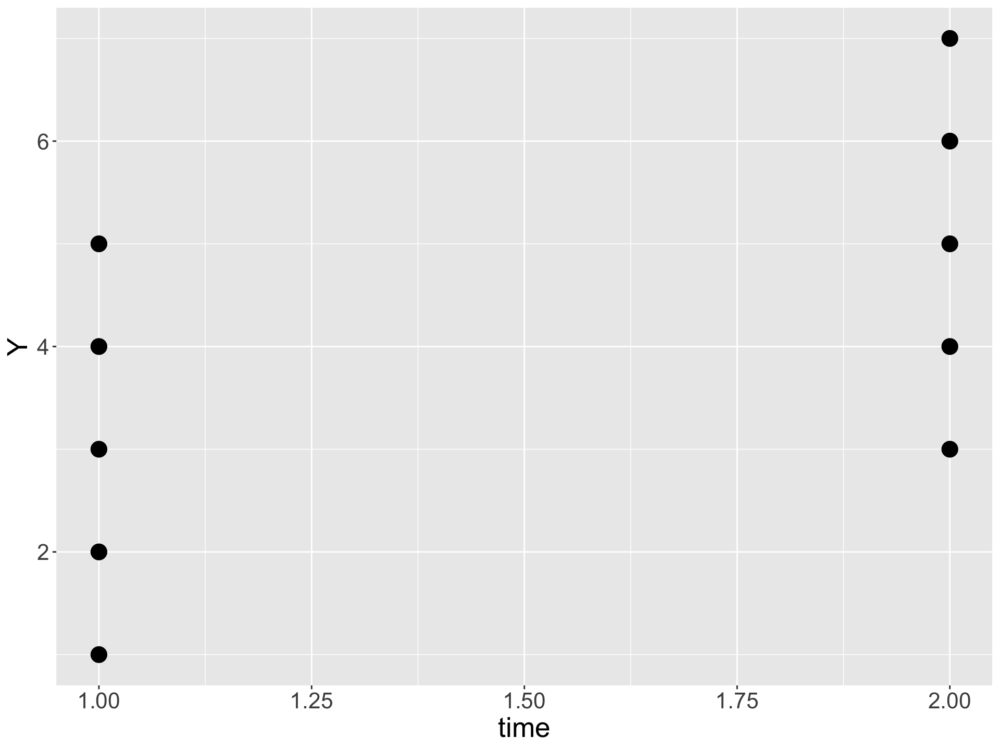
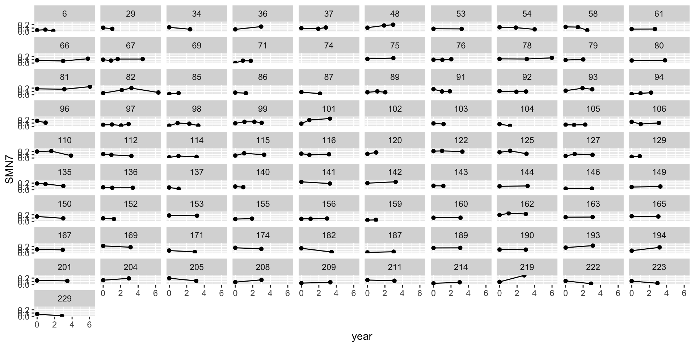
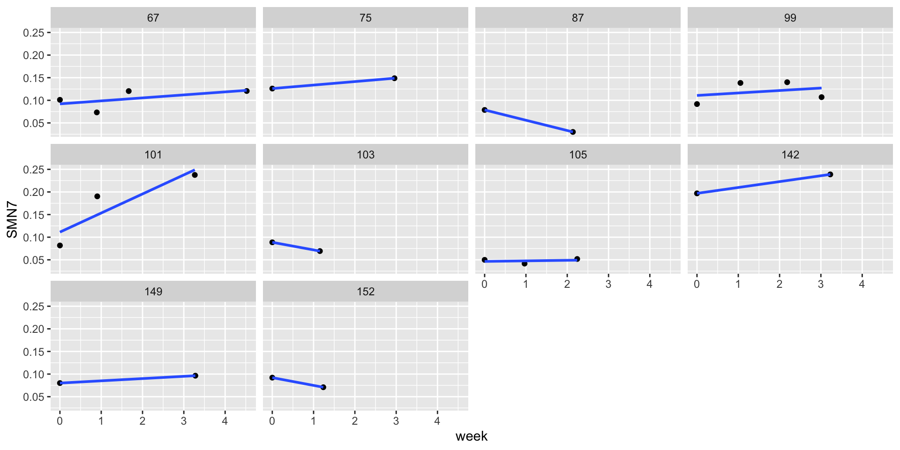
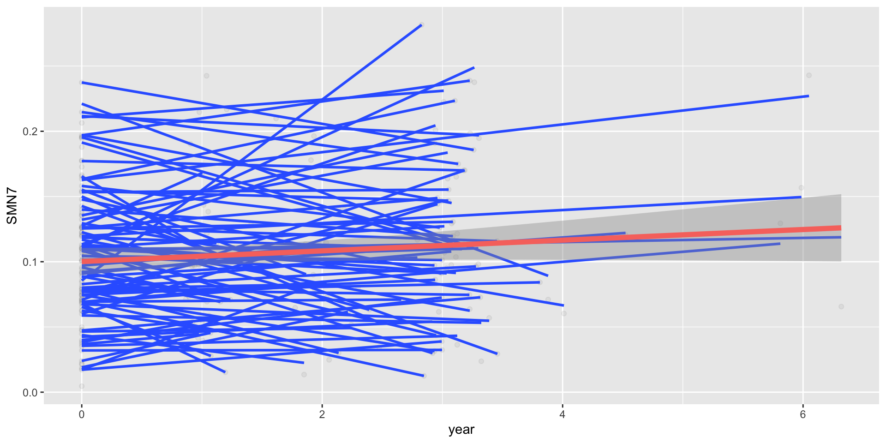
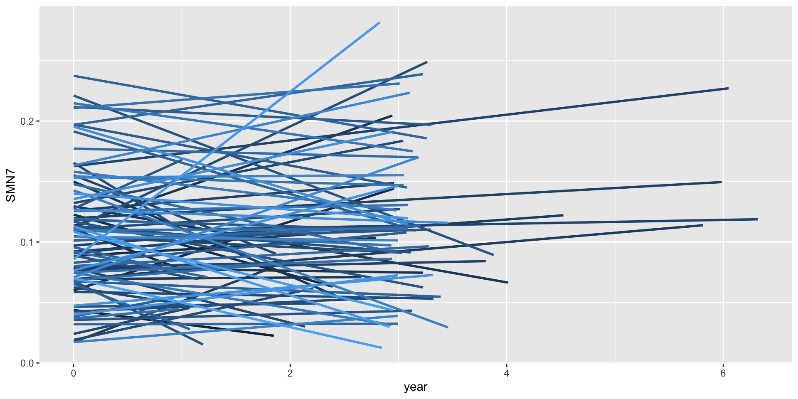
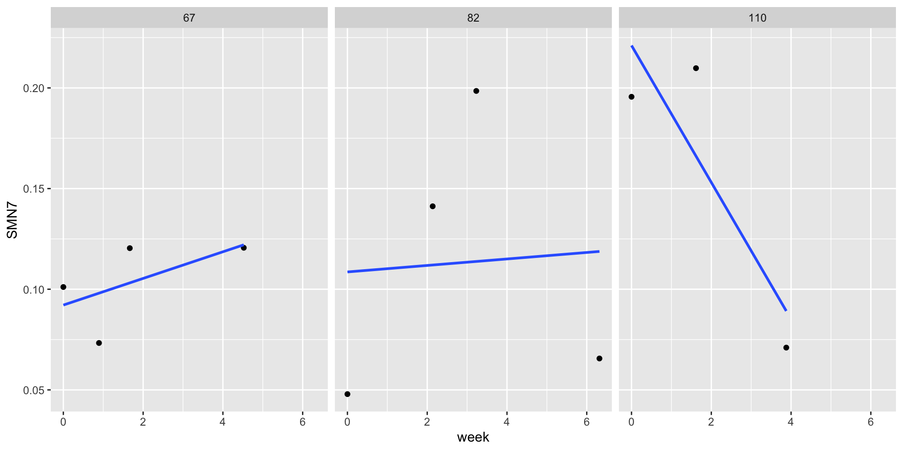

Thinking longitudinally
Intro to data and motivation
Goals for today:
Get a feeling for how to think/talk about longitudinal/repeated measures data
Introduce some important terms
Begin to develop a framework for analysis
how to think longitudinal-y
lines/ trajectories
variance decomposition

How do we define “change”?
Types of change (most common):
Differential / rank order consistency/rank order stability (correlations)
Mean level/ absolute change (mean differences)
Perfect rank order, mean level increase
No rank order, mean level increase
How do we define “change”?
Because there are many types of change, we will view change in terms of the model.
(Usually) it is clearer to refer to the type of change in terms of an equation or pictorially. Putting a word onto it usually causes confusion, which is why there are a lot of redundant terms in the literature.
Models may be able to tell us about two different types of change (within person vs between person change)
Prerequisites
Ordinal or greater scale of measurement us easiest. Dichotomous is hard.
Construct has the same meaning across measurement occasions. Usually the same items. Called measurement invariance. Complicates developmental work.
2 or more measurement occasions. More is better! Though often 3 - 10 is practically fine for some models. With 30+ occasions you have “intensive” longitudinal data which presents new models and opportunities.
Example
# A tibble: 225 × 51
ID group time CON CON_SAL CON_SMN7 DAN DAN_CON DAN_SAL DAN_SMN7
<dbl> <chr> <dbl> <dbl> <dbl> <dbl> <dbl> <dbl> <dbl> <dbl>
1 6 PD 4 0.193 0.0708 0.0088 0.162 0.116 0.0739 0.0041
2 6 PD 5 0.195 0.0862 0.004 0.168 0.117 0.0812 0.0204
3 6 PD 6 0.181 0.0916 -0.0037 0.215 0.164 0.113 0.0155
4 29 PD 4 0.159 0.0438 -0.0253 0.175 0.0161 0.0621 0.0121
5 29 PD 5 0.0881 0.0446 -0.0288 0.136 0.0377 0.0277 0.0444
6 34 CTRL 4 0.137 0.0113 -0.0792 0.166 0.0045 -0.0075 0.0432
7 34 CTRL 6 0.0746 0.0009 -0.0089 0.140 0.0635 -0.024 0.0483
8 36 CTRL 1 0.139 0.0438 -0.0466 0.152 0.0279 0.0137 0.0513
9 36 CTRL 4 0.180 0.0772 -0.0648 0.205 -0.0116 -0.0477 0.0415
10 37 PD 3 0.226 0.0412 -0.0565 0.219 0.0971 0.0195 0.0644
# … with 215 more rows, and 41 more variables: DMN6 <dbl>, DMN6_CON <dbl>,
# DMN6_DAN <dbl>, DMN6_SAL <dbl>, DMN6_SMN7 <dbl>, SAL <dbl>, SAL_SMN7 <dbl>,
# SMN7 <dbl>, wave <dbl>, date <date>, Exclude <chr>, RSNdata <dbl>,
# RSNexclude <chr>, RSNexcludeDevDem <chr>, CogDate_0 <date>,
# CCIRtrio_MR_date_0 <date>, Dur_PDsx_0 <dbl>, PIBpos18 <chr>,
# Neuro_Dx <chr>, NeuroCDR_0 <chr>, NeuroCDR_1 <chr>, NeuroCDR_2 <chr>,
# NeuroCDR_3 <chr>, NeuroCDR_4 <chr>, NeuroCDR_5 <chr>, NeuroCDR_6 <chr>, …Individual level
Questions we need to answer
- What is the theoretical shape we want to model - linear, quadradic, cyclical, etc?
- Is shape related to calendar time, age, or maybe artificial time such as grade?
Defining a time metric
Time is the most important part of a longitudinal analyses. The key to interpreting your output is to know how you handled your time variable.
What is the process that is changing someone? Age? Time in study? Year? Wave?
Is it a naturally occurring developmental process? Then maybe age is the best metric. What about tracking child’s cognitive ability, something that might be influenced by level of schooling? Here grade may be more important than age. If you are running an intervention you may want to put everyone on the same starting metric and then control for nuisance variables like age or schooling level.
Temporal design
- I.e., timing, frequency, and spacing of assessments.
- How longitudinal data are collected will impact our ability to model the theoretical shape.
- Because of the difficulty of collecting longitudinal data, a lot of longitudinal data are under specified.
Statistical model
With a theoretical model of change in mind, and a good temporal design, we can then choose our statistical model.
This matching of theory with design with a model is similar to all of stats. We will be using three general purpose models that are related, but have pros and cons in different areas: MLM, SEM, and GAMs
Simple to begin with
Before we get too fancy, lets just run some regressions.
Individual regression output
Code
# A tibble: 20 × 6
# Groups: ID [10]
ID term estimate std.error statistic p.value
<dbl> <chr> <dbl> <dbl> <dbl> <dbl>
1 67 (Intercept) 0.0921 0.0161 5.72 0.0292
2 67 week 0.00662 0.00657 1.01 0.420
3 75 (Intercept) 0.126 NaN NaN NaN
4 75 week 0.00771 NaN NaN NaN
5 87 (Intercept) 0.0787 NaN NaN NaN
6 87 week -0.0227 NaN NaN NaN
7 99 (Intercept) 0.111 0.0236 4.69 0.0426
8 99 week 0.00545 0.0122 0.446 0.699
9 101 (Intercept) 0.111 0.0424 2.62 0.232
10 101 week 0.0421 0.0217 1.94 0.303
11 103 (Intercept) 0.0887 NaN NaN NaN
12 103 week -0.0168 NaN NaN NaN
13 105 (Intercept) 0.0465 0.00658 7.06 0.0896
14 105 week 0.00122 0.00467 0.261 0.838
15 142 (Intercept) 0.197 NaN NaN NaN
16 142 week 0.0130 NaN NaN NaN
17 149 (Intercept) 0.0801 NaN NaN NaN
18 149 week 0.00497 NaN NaN NaN
19 152 (Intercept) 0.0921 NaN NaN NaN
20 152 week -0.0172 NaN NaN NaN Average each regression
# A tibble: 2 × 2
term avg.reg
<chr> <dbl>
1 (Intercept) 0.102
2 week 0.00244This is not that far off from what MLM gives us.
Spaghetti Plot
Thinking longitudinally
Almost all of the questions we have can be simplified down to: lines/trajectories.
Person level trajectories index change for a person
Average person trajectory is the average trajectory
Predictors of change are just a correlation with the trajectory and the predictor
Lines, regardless of the stat model
MLM and SEM (and even GAMs) can be equivalent
We will start with MLM/HLM as it is simple extension of standard regression models. Best suited to run models when the time of measurement differs from person to person (compared to equal intervals). MLM is also better suited for complex error structures and complex nesting above and beyond assessments within person
Why not RM ANOVA?
- Cannot handle missing data
- Assumes rate of change is the same for all individuals.
- Time is categorical.
- Accounting for correlation across time uses up many parameters (df penalty).
- Cannot handle some types of predictors
- Special case of MLM, might as well learn/use flexible model
how to think longitudinal-y
lines/ trajectories
variance decomposition
Modeling dependency
We have multiple DVs per person with longitudinal data. If we ignored the person aspect, the residuals would likely be related, violating standard regression assumption. MLM accounts for residuals for outcomes from the same person through modeling different “levels”
With longitudinal data we have people nested within observations.
Level 1: observation level (observation specific variance)
Level 2: person level (person specific variance)
Person specific variance
Some people start at different levels and some people change at different rates
Observation level variance
After account for a person starting level and their slope, there is still residual variance left over.
Thinking about variation
A goal of longitudinal data analysis (and all other data analysis) is to explain this variation. We will fit models that includes predictors and model constraints (e.g. are people similar or different) to see how it impacts variation.
To the extent that we can put variance into different “piles” (eg people change at different rates, a random slope) we will have more explained variance and less unexplained variance.
Speaking of variation
Between-Person (BP) Variation/Level-2/INTER-individual differences/Time-Invariant
BP = More/less than other peopleWithin-Person (WP) Variation/Level-1/INTRA-individual Differences/Time-Varying
WP = more/less than one’s averageAny variable measured over time usually has both BP and WP variation
Change vs fluctuations
Fuzzy boundary, but:
Within-Person Change: Systematic (lasting) change. Can refer to between-person (inter-individual) differences in within-person change (intra-individual)
Within-Person Fluctuation: No systematic change Outcome just varies/fluctuates over time (e.g., emotion, stress). Time is just a way to get lots of data per individual
What Are Data?
Data are the core of everything that we do in statistical analysis. Data come in many forms, and I don’t just mean .csv, .xls, .sav, etc. Data can be wide, long, documented, fragmented, messy, and about anything else that you can imagine.
Why are we thinking about data? Because 80%, maybe more, of your time spent with “analysis” is spent getting data in order and setting up your model of interest.
Wide vs long
multivariate vs stacked
person vs person period
untidy vs tidy*
Long is what MLM, ggplot2 and tidyverse packages expect whereas SEM and a lot of descriptives are calculated using wide dataframes.

tidyr pivot functions
For longitudinal/repeated measures data, each row is an observation. Each person will have multiple rows.
# A tibble: 225 × 4
ID wave group DAN
<dbl> <dbl> <chr> <dbl>
1 6 1 PD 0.162
2 6 2 PD 0.168
3 6 3 PD 0.215
4 29 1 PD 0.175
5 29 2 PD 0.136
6 34 1 CTRL 0.166
7 34 2 CTRL 0.140
8 36 1 CTRL 0.152
9 36 2 CTRL 0.205
10 37 1 PD 0.219
# … with 215 more rowspivot_wider
The pivot_wider() function takes two arguments: names_from which is the variable whose values will be converted to column names and values_from whose values will be cell values.
# A tibble: 91 × 6
ID group `1` `2` `3` `4`
<dbl> <chr> <dbl> <dbl> <dbl> <dbl>
1 6 PD 0.162 0.168 0.215 NA
2 29 PD 0.175 0.136 NA NA
3 34 CTRL 0.166 0.140 NA NA
4 36 CTRL 0.152 0.205 NA NA
5 37 PD 0.219 0.158 0.259 NA
6 48 PD 0.130 0.270 0.248 NA
7 53 CTRL 0.211 0.152 NA NA
8 54 PD 0.220 0.152 0.192 NA
9 58 PD 0.380 0.215 0.204 NA
10 61 PD 0.0818 0.0628 NA NA
# … with 81 more rowspivot_longer
The pivot_longer function takes three arguments: - cols is a list of columns that are to be collapsed. The columns can be referenced by column number or column name. - names_to is the name of the new column which will combine all column names. This is up to you to decide what the name is. - values_to is the name of the new column which will combine all column values associated with each variable combination.
# A tibble: 364 × 4
ID group wave DAN
<dbl> <chr> <chr> <dbl>
1 6 PD 1 0.162
2 6 PD 2 0.168
3 6 PD 3 0.215
4 6 PD 4 NA
5 29 PD 1 0.175
6 29 PD 2 0.136
7 29 PD 3 NA
8 29 PD 4 NA
9 34 CTRL 1 0.166
10 34 CTRL 2 0.140
# … with 354 more rowsSeperate and Unite
Many times datasets are, for a lack of a better term, messy.
One common way to represent longitudinal data is to name the variable with a wave signifier.
# A tibble: 3 × 4
ID ext_1 ext_2 ext_3
<dbl> <dbl> <dbl> <dbl>
1 1 4 4 4
2 2 6 5 4
3 3 4 5 6# A tibble: 9 × 3
ID time EXT
<dbl> <chr> <dbl>
1 1 ext_1 4
2 1 ext_2 4
3 1 ext_3 4
4 2 ext_1 6
5 2 ext_2 5
6 2 ext_3 4
7 3 ext_1 4
8 3 ext_2 5
9 3 ext_3 6The time column is now specific to ext, which is a problem if I have more than one variable that I am pivoting. So how can we go ahead and separate out the ext part?
Code
# A tibble: 9 × 4
ID variable time EXT
<dbl> <chr> <chr> <dbl>
1 1 ext 1 4
2 1 ext 2 4
3 1 ext 3 4
4 2 ext 1 6
5 2 ext 2 5
6 2 ext 3 4
7 3 ext 1 4
8 3 ext 2 5
9 3 ext 3 6In terms of setting up your data, it is often helpful to include markers that separate parts of the variable eg “_” or “.” A variable that is ext_1 is easier to separate than ext1.
Also that the time column is a character rather than numeric. We need to change this so as to use time continuously in our models. There are a few ways to do it, but this is perhaps the most straightforward.
Something that is a little more elegant is to do both the separating AND the making into numeric in the original pivot_longer function
names_prefix omits what is in there from the new cell names. Previously we had ext_1, ext_2, etc, which we had to separate with a different function, but this does it within pivot_longer
names_transform does any transformations within the variables. Here instead of a separate call, we can make our variables numeric.
Another common problem that we often face is the need to unite two variables into one. Enter, the creatively titled unite function. Sometimes this happens when our time metric is entered in seperate columns.
# A tibble: 3 × 6
ID year month day hour min
<dbl> <dbl> <dbl> <dbl> <dbl> <dbl>
1 1 2020 1 1 4 55
2 2 2020 1 1 2 17
3 3 2020 1 1 5 23To combine them into one time metric
Date time metrics
A date-time is a date plus a time: it uniquely identifies an instant in time (typically to the nearest second). These are called POSIXct in R.
Bringing these into R from some outside place (excel, spss) can lead to confusion, as they can be formatted differently
You can create these relatively straight forwardly…by hand
[1] "2017-01-31 20:11:59 UTC"[1] "2017-01-31 08:01:00 UTC"Or you can use existing columns variables. This is where the {lubridate} package comes in handy
# A tibble: 3 × 7
ID year month day hour min t_1
<dbl> <dbl> <dbl> <dbl> <dbl> <dbl> <dttm>
1 1 2020 1 1 4 55 2020-01-01 04:55:00
2 2 2020 1 1 2 17 2020-01-01 02:17:00
3 3 2020 1 1 5 23 2020-01-01 05:23:00Note the t_1 variable is a POSIXct (date time) variable type. Once in this format it is much easier to manipulate and work with dates and times.
Projects and Rmarkdown
As with any project, but especially for longitudinal data, one of the most important aspects of data analysis is A. not losing track of what you did and B. being organized.
- rstudio projects 2. git and 3. codebooks are helpful in accomplishing these two goals. We will talk about #1 and #3 but I also encourage you to read about git. These are not the only way to do these sorts of analyses but I feel that exposure to them is helpful, as often in the social sciences these sort of decisions are not discussed.
The main reason I am going over this is because too much of the code I see looks like this:
mutate(score_mean1 = rowMeans(data[ ,c("Score1a", "Score2a", "Score3a", "Score4a")]))
data <- import %>%
mutate(score_mean2 = rowMeans(data[ ,c("Score1b", "Score2b", "Score3b", "Score4b")]))
data <- import %>%
mutate(score_mean3 = rowMeans(data[ ,c("Score1c", "Score2c", "Score3c", "Score4c")]))
data <- import %>%
mutate(score_mean4 = rowMeans(data[ ,c("Score1d", "Score2d", "Score3d", "Score4d")]))
data <- import %>%
mutate(score_mean5 = rowMeans(data[ ,c("Score1e", "Score2e", "Score3e", "Score4e")]))
data <- import %>%
mutate(score_mean6 = rowMeans(data[ ,c("Score1f", "Score2f", "Score3f", "Score4f")]))
data <- import %>%
mutate(score_mean7 = rowMeans(data[ ,c("Score1g", "Score2g", "Score3g", "Score4g")]))
data <- import %>%
mutate(score_mean8 = rowMeans(data[ ,c("Score1h", "Score2h", "Score3h", "Score4h")]))
data <- import %>%
mutate(score_mean9 = rowMeans(data[ ,c("Score1i", "Score2i", "Score3i", "Score4i")]))What these help to do is create a chain of processing where you start with RAW data and end up with the cleaned data. Importantly you can always start over from the raw data. This is important for people wanting to reproduce your findings and or your future self figuring out where a certain variable came from.
We start creating the chain of processing by documenting all of your code. To do so we will be using rmarkdown or quarto documents, as the language is easier than LaTeX and more helpful than plaintext.
When I create an rmarkdown document for my own research projects, I always start by setting up 3 components:
- Packages
- Codebook(s)
- Data
Below, we will step through each of these separately, setting ourselves up to (hopefully) flawlessly communicate with R and our data. Note that you do not need to use rmarkdown or quarto but I think they are much more useful than standard .R syntax.
Packages
Packages seems like the most basic step, but it is actually very important. Depending on what gets loaded you might overwrite functions from other packages. (Note: I will often reload or not follow this advice within lectures for didactic reasons, choosing to put library calls above the code)
Codebook
The second step is a codebook. Arguably, this is the first step because you should create the codebook long before you open R and load your data.
Why a codebook? Well, because you typically have a lot of variables and you will not be able to remember all the details that go into each one of them (rating scale, what the actual item was, was it coded someway, etc). This is especially true now that data are being collected online, which often provides placeholder variable names that then need to be processed somehow.
This codebook will serve as a means to document RAW code. It will also allow us to automate some tasks that are somewhat cumbersome, facilitate open data practices, and efficiently see what variables are available. Ultimately, we want to be able to show how we got from the start, with the messy raw data, to our analyses and results at the end? A codebook makes this easier.
To illustrate, we are going to using some data from the German Socioeconomic Panel Study (GSOEP), which is an ongoing Panel Study in Germany. Note that these data are for teaching purposes only, shared under the license for the Comprehensive SOEP teaching dataset. The full data are available for free at: https://www.diw.de/en/diw_02.c.222829.en/access_and_ordering.html.
For this tutorial, I created the codebook for you, and included what I believe are the core columns you may need. Some of these columns will not be particularly helpful for this dataset. For example, many of you likely work with datasets that have only a single file while others work with datasets spread across many files (e.g., different waves, different sources). As a result, the “dataset” column of the codebook may only have a single value whereas for others it may have multiple.
Here are my core columns that are based on the original data
dataset this column indexes the name of the dataset that you will be pulling the data from. This is important because we will use this info later on to load and clean specific data files.
old_name this column is the name of the variable in the data you are pulling it from. This should be exact. The goal of this column is that it will allow us to
select()variables from the original data file and rename them something that is more useful to us.item_text this column is the original text that participants saw or a description of the item.
scale this column tells you what the scale of the variable is. Is it a numeric variable, a text variable, etc. This is helpful for knowing the plausible range.
reverse this column tells you whether items in a scale need to be reverse coded. I recommend coding this as 1 (leave alone) and -1 (reverse) for reasons that will become clear later.
mini this column represents the minimum value of scales that are numeric. Leave blank otherwise.
maxi this column represents the maximumv alue of scales that are numeric. Leave blank otherwise.
recode sometimes, we want to recode variables for analyses (e.g. for categorical variables with many levels where sample sizes for some levels are too small to actually do anything with it). I use this column to note the kind of recoding I’ll do to a variable for transparency.
Here are additional columns that will make our lives easier or are applicable to some but not all data sets:
category broad categories that different variables can be put into. I’m a fan of naming them things like “outcome”, “predictor”, “moderator”, “demographic”, “procedural”, etc. but sometimes use more descriptive labels like “Big 5” to indicate the model from which the measures are derived.
label label is basically one level lower than category. So if the category is Big 5, the label would be, or example, “A” for Agreeableness, “SWB” for subjective well-being, etc. This column is most important and useful when you have multiple items in a scales, so I’ll typically leave this blank when something is a standalone variable (e.g. sex, single-item scales, etc.).
item_name This is the lowest level and most descriptive variable. It indicates which item in scale something is. So it may be “kind” for Agreebleness or “sex” for the demographic biological sex variable.
year for longitudinal data, we have several waves of data and the name of the same item across waves is often different, so it’s important to note to which wave an item belongs. You can do this by noting the wave (e.g. 1, 2, 3), but I prefer the actual year the data were collected (e.g. 2005, 2009, etc.) if that is appropriate.
new_name This is a column that brings together much of the information we’ve already collected. It’s purpose is to be the new name that we will give to the variable that is more useful and descriptive to us. This is a constructed variable that brings together others. I like to make it a combination of “category”, “label”, “item_name”, and year using varying combos of “_” and “.” that we can use later with tidyverse functions.
There is a separate discussion to be had on naming conventions for your variables, but the important idea to remember is that names convey important information and we want to use this information later on to make our life easier. By coding these variables using this information AND systematically using different separators we can accomplish this goal.
- meta Some datasets have a meta name, which essentially means a name that variable has across all waves to make it clear which variables are the same. They are not always useful as some data sets have meta names but no great way of extracting variables using them. But they’re still typically useful to include in your codebook regardless.
These are just suggestions, but after working with many longitudinal datasets I will say all of them are horrible in some way. Doing this makes them less horrible. Is it some upfront work? Yes. Will it ultimately save you time? Yes. Also, if you know this prior to runnign a study you are making some sort of code book anyways, right, right? Might as well kill two birds with one stone.
You can make the codebook anyway you want, but the two best options are miscrosoft excel and google pages. Not because they are necessarily the best functioning but because they are relatively ubiquitous and are easy to share.
We will create a codebook but then bring the codebook into R via turning it into a csv. You can rethink the codebook as a way of coding prior to putting anything into R.
Below, I’ll load in the codebook we will use for this study, which will include all of the above columns.
Code
dataset old_name item_text
1 persnr Never Changing Person ID
2 hhnr household ID
3 ppfad gebjahr Year of Birth
4 ppfad sex Sex
5 vp vp12501 Thorough Worker
6 zp zp12001 Thorough Worker
7 bdp bdp15101 Thorough Worker
8 vp vp12502 Am communicative
9 zp zp12002 Am communicative
10 bdp bdp15102 Am communicative
11 vp vp12503 Am sometimes too coarse with others
12 zp zp12003 Am sometimes too coarse with others
13 bdp bdp15103 Am sometimes too coarse with others
14 vp vp12504 Am original
15 zp zp12004 Am original
16 bdp bdp15104 Am original
17 vp vp12505 Worry a lot
18 zp zp12005 Worry a lot
19 bdp bdp15105 Worry a lot
20 vp vp12506 Able to forgive
21 zp zp12006 Able to forgive
22 bdp bdp15106 Able to forgive
23 vp vp12507 Tend to be lazy
24 zp zp12007 Tend to be lazy
25 bdp bdp15107 Tend to be lazy
26 vp vp12508 Am sociable
27 zp zp12008 Am sociable
28 bdp bdp15108 Am sociable
29 vp vp12509 Value artistic experiences
30 zp zp12009 Value artistic experiences
31 bdp bdp15109 Value artistic experiences
32 vp vp12510 Somewhat nervous
33 zp zp12010 Somewhat nervous
34 bdp bdp15110 Somewhat nervous
35 vp vp12511 Carry out tasks efficiently
36 zp zp12011 Carry out tasks efficiently
37 bdp bdp15111 Carry out tasks efficiently
38 vp vp12512 Reserved
39 zp zp12012 Reserved
40 bdp bdp15112 Reserved
41 vp vp12513 Friendly with others
42 zp zp12013 Friendly with others
43 bdp bdp15113 Friendly with others
44 vp vp12514 Have a lively imagination
45 zp zp12014 Have a lively imagination
46 bdp bdp15114 Have a lively imagination
47 vp vp12515 Deal well with stress
48 zp zp12015 Deal well with stress
49 bdp bdp15115 Deal well with stress
50 vp vp15307 Child Born
51 wp wp14107 Child Born
52 xp xp14807 Child Born
53 yp yp15407 Child Born
54 zp zp15607 Child Born
55 bap bap15907 Child Born
56 bbp bbp15110 Child Born
57 bcp bcp15010 Child Born
58 bdp bdp15710 Child Born
59 bep bep15010 Child Born
60 bfp bfp17310 Child Born
61 vp vp15310 Child Moved Out
62 wp wp14110 Child Moved Out
63 xp xp14813 Child Moved Out
64 yp yp15413 Child Moved Out
65 zp zp15613 Child Moved Out
66 bap bap15913 Child Moved Out
67 bbp bbp15116 Child Moved Out
68 bcp bcp15016 Child Moved Out
69 bdp bdp15716 Child Moved Out
70 bep bep15016 Child Moved Out
71 bfp bfp17316 Child Moved Out
72 vp vp15316 Divorced
73 wp wp14116 Divorced
74 xp xp14819 Divorced
75 yp yp15419 Divorced
76 zp zp15619 Divorced
77 bap bap15919 Divorced
78 bbp bbp15122 Divorced
79 bcp bcp15022 Divorced
80 bdp bdp15722 Divorced
81 bep bep15022 Divorced
82 bfp bfp17322 Divorced
83 vp vp15322 Father Died
84 wp wp14122 Father Died
85 xp xp14825 Father Died
86 yp yp15425 Father Died
87 zp zp15625 Father Died
88 bap bap15925 Father Died
89 bbp bbp15128 Father Died
90 bcp bcp15028 Father Died
91 bdp bdp15728 Father Died
92 bep bep15028 Father Died
93 bfp bfp17328 Father Died
94 bbp bbp15101 Got Together with a New Partner
95 bcp bcp15001 Got Together with a New Partner
96 bdp bdp15701 Got Together with a New Partner
97 bep bep15001 Got Together with a New Partner
98 bfp bfp17301 Got Together with a New Partner
99 vp vp15301 Married
100 wp wp14101 Married
101 xp xp14801 Married
102 yp yp15401 Married
103 zp zp15601 Married
104 bap bap15901 Married
105 bbp bbp15104 Married
106 bcp bcp15004 Married
107 bdp bdp15704 Married
108 bep bep15004 Married
109 bfp bfp17304 Married
110 vp vp15325 Mother Died
111 wp wp14125 Mother Died
112 xp xp14828 Mother Died
113 yp yp15428 Mother Died
114 zp zp15628 Mother Died
115 bap bap15928 Mother Died
116 bbp bbp15131 Mother Died
117 bcp bcp15031 Mother Died
118 bdp bdp15731 Mother Died
119 bep bep15031 Mother Died
120 bfp bfp17331 Mother Died
121 vp vp15304 Moved In Together
122 wp wp14104 Moved In Together
123 xp xp14804 Moved In Together
124 yp yp15404 Moved In Together
125 zp zp15604 Moved In Together
126 bap bap15904 Moved In Together
127 bbp bbp15107 Moved In Together
128 bcp bcp15007 Moved In Together
129 bdp bdp15707 Moved In Together
130 bep bep15007 Moved In Together
131 bfp bfp17307 Moved In Together
132 vp vp15319 Partner Died
133 wp wp14119 Partner Died
134 xp xp14822 Partner Died
135 yp yp15422 Partner Died
136 zp zp15622 Partner Died
137 bap bap15922 Partner Died
138 bbp bbp15125 Partner Died
139 bcp bcp15025 Partner Died
140 bdp bdp15725 Partner Died
141 bep bep15025 Partner Died
142 bfp bfp17325 Partner Died
143 vp vp15313 Separated From Partner
144 wp wp14113 Separated From Partner
145 xp xp14816 Separated From Partner
146 yp yp15416 Separated From Partner
147 zp zp15616 Separated From Partner
148 bap bap15916 Separated From Partner
149 bbp bbp15119 Separated From Partner
150 bcp bcp15019 Separated From Partner
151 bdp bdp15719 Separated From Partner
152 bep bep15019 Separated From Partner
153 bfp bfp17319 Separated From Partner
scale
1
2
3 numeric
4 \n1 [1] Male\n2 [2] Female\n-1 [-1] No Answer\n-2 [-2] Does not apply\n-3 [-3] Answer improbable\n-4 [-4] Inadmissible multiple response\n-5 [-5] Not included in this version of the questionnaire\n-6 [-6] Version of questionnaire with modified filtering\n56186 57630 24 0 0 0 0 0
5
6
7
8
9
10
11
12
13
14
15
16
17
18
19
20
21
22
23
24
25
26
27
28
29
30
31
32
33
34
35
36
37
38
39
40
41
42
43
44
45
46
47
48
49
50
51
52
53
54
55
56
57
58
59
60
61
62
63
64
65
66
67
68
69
70
71
72
73
74
75
76
77
78
79
80
81
82
83
84
85
86
87
88
89
90
91
92
93
94
95
96
97
98
99
100
101
102
103
104
105
106
107
108
109
110
111
112
113
114
115
116
117
118
119
120
121
122
123
124
125
126
127
128
129
130
131
132
133
134
135
136
137
138
139
140
141
142
143
144
145
146
147
148
149
150
151
152
153
category label item_name year new_name reverse mini
1 Procedural SID 0 Procedural__SID 1 NA
2 Procedural household 0 Procedural__household 1 NA
3 Demographic DOB 0 Demographic__DOB 1 NA
4 Demographic Sex 0 Demographic__Sex 1 NA
5 Big 5 C thorough 2005 Big 5__C_thorough.2005 1 1
6 Big 5 C thorough 2009 Big 5__C_thorough.2009 1 1
7 Big 5 C thorough 2013 Big 5__C_thorough.2013 1 1
8 Big 5 E communic 2005 Big 5__E_communic.2005 1 1
9 Big 5 E communic 2009 Big 5__E_communic.2009 1 1
10 Big 5 E communic 2013 Big 5__E_communic.2013 1 1
11 Big 5 A coarse 2005 Big 5__A_coarse.2005 -1 1
12 Big 5 A coarse 2009 Big 5__A_coarse.2009 -1 1
13 Big 5 A coarse 2013 Big 5__A_coarse.2013 -1 1
14 Big 5 O original 2005 Big 5__O_original.2005 1 1
15 Big 5 O original 2009 Big 5__O_original.2009 1 1
16 Big 5 O original 2013 Big 5__O_original.2013 1 1
17 Big 5 N worry 2005 Big 5__N_worry.2005 -1 1
18 Big 5 N worry 2009 Big 5__N_worry.2009 -1 1
19 Big 5 N worry 2013 Big 5__N_worry.2013 -1 1
20 Big 5 A forgive 2005 Big 5__A_forgive.2005 1 1
21 Big 5 A forgive 2009 Big 5__A_forgive.2009 1 1
22 Big 5 A forgive 2013 Big 5__A_forgive.2013 1 1
23 Big 5 C lazy 2005 Big 5__C_lazy.2005 -1 1
24 Big 5 C lazy 2009 Big 5__C_lazy.2009 -1 1
25 Big 5 C lazy 2013 Big 5__C_lazy.2013 -1 1
26 Big 5 E sociable 2005 Big 5__E_sociable.2005 1 1
27 Big 5 E sociable 2009 Big 5__E_sociable.2009 1 1
28 Big 5 E sociable 2013 Big 5__E_sociable.2013 1 1
29 Big 5 O artistic 2005 Big 5__O_artistic.2005 1 1
30 Big 5 O artistic 2009 Big 5__O_artistic.2009 1 1
31 Big 5 O artistic 2013 Big 5__O_artistic.2013 1 1
32 Big 5 N nervous 2005 Big 5__N_nervous.2005 -1 1
33 Big 5 N nervous 2009 Big 5__N_nervous.2009 -1 1
34 Big 5 N nervous 2013 Big 5__N_nervous.2013 -1 1
35 Big 5 C efficient 2005 Big 5__C_efficient.2005 1 1
36 Big 5 C efficient 2009 Big 5__C_efficient.2009 1 1
37 Big 5 C efficient 2013 Big 5__C_efficient.2013 1 1
38 Big 5 E reserved 2005 Big 5__E_reserved.2005 -1 1
39 Big 5 E reserved 2009 Big 5__E_reserved.2009 -1 1
40 Big 5 E reserved 2013 Big 5__E_reserved.2013 -1 1
41 Big 5 A friendly 2005 Big 5__A_friendly.2005 1 1
42 Big 5 A friendly 2009 Big 5__A_friendly.2009 1 1
43 Big 5 A friendly 2013 Big 5__A_friendly.2013 1 1
44 Big 5 O imagin 2005 Big 5__O_imagin.2005 1 1
45 Big 5 O imagin 2009 Big 5__O_imagin.2009 1 1
46 Big 5 O imagin 2013 Big 5__O_imagin.2013 1 1
47 Big 5 N dealStress 2005 Big 5__N_dealStress.2005 1 1
48 Big 5 N dealStress 2009 Big 5__N_dealStress.2009 1 1
49 Big 5 N dealStress 2013 Big 5__N_dealStress.2013 1 1
50 Life Event ChldBrth 2005 Life Event__ChldBrth.2005 1 NA
51 Life Event ChldBrth 2006 Life Event__ChldBrth.2006 1 NA
52 Life Event ChldBrth 2007 Life Event__ChldBrth.2007 1 NA
53 Life Event ChldBrth 2008 Life Event__ChldBrth.2008 1 NA
54 Life Event ChldBrth 2009 Life Event__ChldBrth.2009 1 NA
55 Life Event ChldBrth 2010 Life Event__ChldBrth.2010 1 NA
56 Life Event ChldBrth 2011 Life Event__ChldBrth.2011 1 NA
57 Life Event ChldBrth 2012 Life Event__ChldBrth.2012 1 NA
58 Life Event ChldBrth 2013 Life Event__ChldBrth.2013 1 NA
59 Life Event ChldBrth 2014 Life Event__ChldBrth.2014 1 NA
60 Life Event ChldBrth 2015 Life Event__ChldBrth.2015 1 NA
61 Life Event ChldMvOut 2005 Life Event__ChldMvOut.2005 1 NA
62 Life Event ChldMvOut 2006 Life Event__ChldMvOut.2006 1 NA
63 Life Event ChldMvOut 2007 Life Event__ChldMvOut.2007 1 NA
64 Life Event ChldMvOut 2008 Life Event__ChldMvOut.2008 1 NA
65 Life Event ChldMvOut 2009 Life Event__ChldMvOut.2009 1 NA
66 Life Event ChldMvOut 2010 Life Event__ChldMvOut.2010 1 NA
67 Life Event ChldMvOut 2011 Life Event__ChldMvOut.2011 1 NA
68 Life Event ChldMvOut 2012 Life Event__ChldMvOut.2012 1 NA
69 Life Event ChldMvOut 2013 Life Event__ChldMvOut.2013 1 NA
70 Life Event ChldMvOut 2014 Life Event__ChldMvOut.2014 1 NA
71 Life Event ChldMvOut 2015 Life Event__ChldMvOut.2015 1 NA
72 Life Event Divorce 2005 Life Event__Divorce.2005 1 NA
73 Life Event Divorce 2006 Life Event__Divorce.2006 1 NA
74 Life Event Divorce 2007 Life Event__Divorce.2007 1 NA
75 Life Event Divorce 2008 Life Event__Divorce.2008 1 NA
76 Life Event Divorce 2009 Life Event__Divorce.2009 1 NA
77 Life Event Divorce 2010 Life Event__Divorce.2010 1 NA
78 Life Event Divorce 2011 Life Event__Divorce.2011 1 NA
79 Life Event Divorce 2012 Life Event__Divorce.2012 1 NA
80 Life Event Divorce 2013 Life Event__Divorce.2013 1 NA
81 Life Event Divorce 2014 Life Event__Divorce.2014 1 NA
82 Life Event Divorce 2015 Life Event__Divorce.2015 1 NA
83 Life Event DadDied 2005 Life Event__DadDied.2005 1 NA
84 Life Event DadDied 2006 Life Event__DadDied.2006 1 NA
85 Life Event DadDied 2007 Life Event__DadDied.2007 1 NA
86 Life Event DadDied 2008 Life Event__DadDied.2008 1 NA
87 Life Event DadDied 2009 Life Event__DadDied.2009 1 NA
88 Life Event DadDied 2010 Life Event__DadDied.2010 1 NA
89 Life Event DadDied 2011 Life Event__DadDied.2011 1 NA
90 Life Event DadDied 2012 Life Event__DadDied.2012 1 NA
91 Life Event DadDied 2013 Life Event__DadDied.2013 1 NA
92 Life Event DadDied 2014 Life Event__DadDied.2014 1 NA
93 Life Event DadDied 2015 Life Event__DadDied.2015 1 NA
94 Life Event NewPart 2011 Life Event__NewPart.2011 1 NA
95 Life Event NewPart 2012 Life Event__NewPart.2012 1 NA
96 Life Event NewPart 2013 Life Event__NewPart.2013 1 NA
97 Life Event NewPart 2014 Life Event__NewPart.2014 1 NA
98 Life Event NewPart 2015 Life Event__NewPart.2015 1 NA
99 Life Event Married 2005 Life Event__Married.2005 1 NA
100 Life Event Married 2006 Life Event__Married.2006 1 NA
101 Life Event Married 2007 Life Event__Married.2007 1 NA
102 Life Event Married 2008 Life Event__Married.2008 1 NA
103 Life Event Married 2009 Life Event__Married.2009 1 NA
104 Life Event Married 2010 Life Event__Married.2010 1 NA
105 Life Event Married 2011 Life Event__Married.2011 1 NA
106 Life Event Married 2012 Life Event__Married.2012 1 NA
107 Life Event Married 2013 Life Event__Married.2013 1 NA
108 Life Event Married 2014 Life Event__Married.2014 1 NA
109 Life Event Married 2015 Life Event__Married.2015 1 NA
110 Life Event MomDied 2005 Life Event__MomDied.2005 1 NA
111 Life Event MomDied 2006 Life Event__MomDied.2006 1 NA
112 Life Event MomDied 2007 Life Event__MomDied.2007 1 NA
113 Life Event MomDied 2008 Life Event__MomDied.2008 1 NA
114 Life Event MomDied 2009 Life Event__MomDied.2009 1 NA
115 Life Event MomDied 2010 Life Event__MomDied.2010 1 NA
116 Life Event MomDied 2011 Life Event__MomDied.2011 1 NA
117 Life Event MomDied 2012 Life Event__MomDied.2012 1 NA
118 Life Event MomDied 2013 Life Event__MomDied.2013 1 NA
119 Life Event MomDied 2014 Life Event__MomDied.2014 1 NA
120 Life Event MomDied 2015 Life Event__MomDied.2015 1 NA
121 Life Event MoveIn 2005 Life Event__MoveIn.2005 1 NA
122 Life Event MoveIn 2006 Life Event__MoveIn.2006 1 NA
123 Life Event MoveIn 2007 Life Event__MoveIn.2007 1 NA
124 Life Event MoveIn 2008 Life Event__MoveIn.2008 1 NA
125 Life Event MoveIn 2009 Life Event__MoveIn.2009 1 NA
126 Life Event MoveIn 2010 Life Event__MoveIn.2010 1 NA
127 Life Event MoveIn 2011 Life Event__MoveIn.2011 1 NA
128 Life Event MoveIn 2012 Life Event__MoveIn.2012 1 NA
129 Life Event MoveIn 2013 Life Event__MoveIn.2013 1 NA
130 Life Event MoveIn 2014 Life Event__MoveIn.2014 1 NA
131 Life Event MoveIn 2015 Life Event__MoveIn.2015 1 NA
132 Life Event PartDied 2005 Life Event__PartDied.2005 1 NA
133 Life Event PartDied 2006 Life Event__PartDied.2006 1 NA
134 Life Event PartDied 2007 Life Event__PartDied.2007 1 NA
135 Life Event PartDied 2008 Life Event__PartDied.2008 1 NA
136 Life Event PartDied 2009 Life Event__PartDied.2009 1 NA
137 Life Event PartDied 2010 Life Event__PartDied.2010 1 NA
138 Life Event PartDied 2011 Life Event__PartDied.2011 1 NA
139 Life Event PartDied 2012 Life Event__PartDied.2012 1 NA
140 Life Event PartDied 2013 Life Event__PartDied.2013 1 NA
141 Life Event PartDied 2014 Life Event__PartDied.2014 1 NA
142 Life Event PartDied 2015 Life Event__PartDied.2015 1 NA
143 Life Event SepPart 2005 Life Event__SepPart.2005 1 NA
144 Life Event SepPart 2006 Life Event__SepPart.2006 1 NA
145 Life Event SepPart 2007 Life Event__SepPart.2007 1 NA
146 Life Event SepPart 2008 Life Event__SepPart.2008 1 NA
147 Life Event SepPart 2009 Life Event__SepPart.2009 1 NA
148 Life Event SepPart 2010 Life Event__SepPart.2010 1 NA
149 Life Event SepPart 2011 Life Event__SepPart.2011 1 NA
150 Life Event SepPart 2012 Life Event__SepPart.2012 1 NA
151 Life Event SepPart 2013 Life Event__SepPart.2013 1 NA
152 Life Event SepPart 2014 Life Event__SepPart.2014 1 NA
153 Life Event SepPart 2015 Life Event__SepPart.2015 1 NA
maxi recode
1 NA
2 NA
3 NA
4 NA
5 7
6 7
7 7
8 7
9 7
10 7
11 7
12 7
13 7
14 7
15 7
16 7
17 7
18 7
19 7
20 7
21 7
22 7
23 7
24 7
25 7
26 7
27 7
28 7
29 7
30 7
31 7
32 7
33 7
34 7
35 7
36 7
37 7
38 7
39 7
40 7
41 7
42 7
43 7
44 7
45 7
46 7
47 7
48 7
49 7
50 NA 1 = experienced; 0 = did not experience
51 NA 1 = experienced; 0 = did not experience
52 NA 1 = experienced; 0 = did not experience
53 NA 1 = experienced; 0 = did not experience
54 NA 1 = experienced; 0 = did not experience
55 NA 1 = experienced; 0 = did not experience
56 NA 1 = experienced; 0 = did not experience
57 NA 1 = experienced; 0 = did not experience
58 NA 1 = experienced; 0 = did not experience
59 NA 1 = experienced; 0 = did not experience
60 NA 1 = experienced; 0 = did not experience
61 NA 1 = experienced; 0 = did not experience
62 NA 1 = experienced; 0 = did not experience
63 NA 1 = experienced; 0 = did not experience
64 NA 1 = experienced; 0 = did not experience
65 NA 1 = experienced; 0 = did not experience
66 NA 1 = experienced; 0 = did not experience
67 NA 1 = experienced; 0 = did not experience
68 NA 1 = experienced; 0 = did not experience
69 NA 1 = experienced; 0 = did not experience
70 NA 1 = experienced; 0 = did not experience
71 NA 1 = experienced; 0 = did not experience
72 NA 1 = experienced; 0 = did not experience
73 NA 1 = experienced; 0 = did not experience
74 NA 1 = experienced; 0 = did not experience
75 NA 1 = experienced; 0 = did not experience
76 NA 1 = experienced; 0 = did not experience
77 NA 1 = experienced; 0 = did not experience
78 NA 1 = experienced; 0 = did not experience
79 NA 1 = experienced; 0 = did not experience
80 NA 1 = experienced; 0 = did not experience
81 NA 1 = experienced; 0 = did not experience
82 NA 1 = experienced; 0 = did not experience
83 NA 1 = experienced; 0 = did not experience
84 NA 1 = experienced; 0 = did not experience
85 NA 1 = experienced; 0 = did not experience
86 NA 1 = experienced; 0 = did not experience
87 NA 1 = experienced; 0 = did not experience
88 NA 1 = experienced; 0 = did not experience
89 NA 1 = experienced; 0 = did not experience
90 NA 1 = experienced; 0 = did not experience
91 NA 1 = experienced; 0 = did not experience
92 NA 1 = experienced; 0 = did not experience
93 NA 1 = experienced; 0 = did not experience
94 NA 1 = experienced; 0 = did not experience
95 NA 1 = experienced; 0 = did not experience
96 NA 1 = experienced; 0 = did not experience
97 NA 1 = experienced; 0 = did not experience
98 NA 1 = experienced; 0 = did not experience
99 NA 1 = experienced; 0 = did not experience
100 NA 1 = experienced; 0 = did not experience
101 NA 1 = experienced; 0 = did not experience
102 NA 1 = experienced; 0 = did not experience
103 NA 1 = experienced; 0 = did not experience
104 NA 1 = experienced; 0 = did not experience
105 NA 1 = experienced; 0 = did not experience
106 NA 1 = experienced; 0 = did not experience
107 NA 1 = experienced; 0 = did not experience
108 NA 1 = experienced; 0 = did not experience
109 NA 1 = experienced; 0 = did not experience
110 NA 1 = experienced; 0 = did not experience
111 NA 1 = experienced; 0 = did not experience
112 NA 1 = experienced; 0 = did not experience
113 NA 1 = experienced; 0 = did not experience
114 NA 1 = experienced; 0 = did not experience
115 NA 1 = experienced; 0 = did not experience
116 NA 1 = experienced; 0 = did not experience
117 NA 1 = experienced; 0 = did not experience
118 NA 1 = experienced; 0 = did not experience
119 NA 1 = experienced; 0 = did not experience
120 NA 1 = experienced; 0 = did not experience
121 NA 1 = experienced; 0 = did not experience
122 NA 1 = experienced; 0 = did not experience
123 NA 1 = experienced; 0 = did not experience
124 NA 1 = experienced; 0 = did not experience
125 NA 1 = experienced; 0 = did not experience
126 NA 1 = experienced; 0 = did not experience
127 NA 1 = experienced; 0 = did not experience
128 NA 1 = experienced; 0 = did not experience
129 NA 1 = experienced; 0 = did not experience
130 NA 1 = experienced; 0 = did not experience
131 NA 1 = experienced; 0 = did not experience
132 NA 1 = experienced; 0 = did not experience
133 NA 1 = experienced; 0 = did not experience
134 NA 1 = experienced; 0 = did not experience
135 NA 1 = experienced; 0 = did not experience
136 NA 1 = experienced; 0 = did not experience
137 NA 1 = experienced; 0 = did not experience
138 NA 1 = experienced; 0 = did not experience
139 NA 1 = experienced; 0 = did not experience
140 NA 1 = experienced; 0 = did not experience
141 NA 1 = experienced; 0 = did not experience
142 NA 1 = experienced; 0 = did not experience
143 NA 1 = experienced; 0 = did not experience
144 NA 1 = experienced; 0 = did not experience
145 NA 1 = experienced; 0 = did not experience
146 NA 1 = experienced; 0 = did not experience
147 NA 1 = experienced; 0 = did not experience
148 NA 1 = experienced; 0 = did not experience
149 NA 1 = experienced; 0 = did not experience
150 NA 1 = experienced; 0 = did not experience
151 NA 1 = experienced; 0 = did not experience
152 NA 1 = experienced; 0 = did not experience
153 NA 1 = experienced; 0 = did not experienceData
First, we need to load in the data. We’re going to use three waves of data from the German Socioeconomic Panel We’re going to use more recent data from three waves of personality data collected between 2005 and 2013.
This code below shows how I would read in and rename a wide-format data set using the codebook I created.
old.names <- codebook$old_name # get old column names
new.names <- codebook$new_name # get new column names
soep <- read.csv("https://raw.githubusercontent.com/josh-jackson/longitudinal-2021/master/soepdata.csv")
soep <- soep %>% # read in data
dplyr::select(old.names) %>% # select the columns from our codebook
setNames(new.names) # rename columns with our new names
soep Procedural__SID Procedural__household Demographic__DOB Demographic__Sex
1 901 94 1951 2
2 1202 124 1913 2
3 2301 230 1946 1
4 2302 230 1946 2
5 2304 230 1978 1
6 2305 230 1946 2
Big 5__C_thorough.2005 Big 5__C_thorough.2009 Big 5__C_thorough.2013
1 6 -1 7
2 7 NA NA
3 7 6 6
4 6 7 7
5 5 NA NA
6 NA NA NA
Big 5__E_communic.2005 Big 5__E_communic.2009 Big 5__E_communic.2013
1 4 4 5
2 6 NA NA
3 6 4 5
4 5 5 5
5 7 NA NA
6 NA NA NA
Big 5__A_coarse.2005 Big 5__A_coarse.2009 Big 5__A_coarse.2013
1 4 3 4
2 1 NA NA
3 5 4 2
4 6 5 5
5 4 NA NA
6 NA NA NA
Big 5__O_original.2005 Big 5__O_original.2009 Big 5__O_original.2013
1 5 4 3
2 6 NA NA
3 5 5 5
4 5 5 6
5 7 NA NA
6 NA NA NA
Big 5__N_worry.2005 Big 5__N_worry.2009 Big 5__N_worry.2013
1 6 6 6
2 6 NA NA
3 4 6 3
4 3 3 3
5 4 NA NA
6 NA NA NA
Big 5__A_forgive.2005 Big 5__A_forgive.2009 Big 5__A_forgive.2013
1 5 5 4
2 -1 NA NA
3 6 7 6
4 3 4 3
5 7 NA NA
6 NA NA NA
Big 5__C_lazy.2005 Big 5__C_lazy.2009 Big 5__C_lazy.2013
1 4 4 3
2 1 NA NA
3 4 2 4
4 2 4 2
5 5 NA NA
6 NA NA NA
Big 5__E_sociable.2005 Big 5__E_sociable.2009 Big 5__E_sociable.2013
1 5 5 4
2 7 NA NA
3 3 4 6
4 5 5 4
5 4 NA NA
6 NA NA NA
Big 5__O_artistic.2005 Big 5__O_artistic.2009 Big 5__O_artistic.2013
1 3 4 3
2 5 NA NA
3 5 6 5
4 7 5 7
5 6 NA NA
6 NA NA NA
Big 5__N_nervous.2005 Big 5__N_nervous.2009 Big 5__N_nervous.2013
1 3 5 2
2 6 NA NA
3 5 5 2
4 2 3 2
5 5 NA NA
6 NA NA NA
Big 5__C_efficient.2005 Big 5__C_efficient.2009 Big 5__C_efficient.2013
1 5 6 5
2 4 NA NA
3 6 7 6
4 6 7 6
5 5 NA NA
6 NA NA NA
Big 5__E_reserved.2005 Big 5__E_reserved.2009 Big 5__E_reserved.2013
1 6 6 6
2 7 NA NA
3 6 4 5
4 4 6 5
5 4 NA NA
6 NA NA NA
Big 5__A_friendly.2005 Big 5__A_friendly.2009 Big 5__A_friendly.2013
1 5 5 6
2 7 NA NA
3 6 6 6
4 5 3 2
5 6 NA NA
6 NA NA NA
Big 5__O_imagin.2005 Big 5__O_imagin.2009 Big 5__O_imagin.2013
1 4 4 4
2 6 NA NA
3 3 4 5
4 3 3 4
5 7 NA NA
6 NA NA NA
Big 5__N_dealStress.2005 Big 5__N_dealStress.2009 Big 5__N_dealStress.2013
1 3 3 5
2 3 NA NA
3 4 5 6
4 6 3 4
5 6 NA NA
6 NA NA NA
Life Event__ChldBrth.2005 Life Event__ChldBrth.2006 Life Event__ChldBrth.2007
1 -2 -2 -2
2 -2 -2 NA
3 -2 -2 -2
4 -2 -2 -2
5 -2 -2 NA
6 NA NA -2
Life Event__ChldBrth.2008 Life Event__ChldBrth.2009 Life Event__ChldBrth.2010
1 -2 -2 -2
2 NA NA NA
3 -2 -2 -2
4 -2 -2 -2
5 NA NA NA
6 NA NA NA
Life Event__ChldBrth.2011 Life Event__ChldBrth.2012 Life Event__ChldBrth.2013
1 -2 -2 -2
2 NA NA NA
3 -2 -2 -2
4 -2 -2 -2
5 NA NA NA
6 NA NA NA
Life Event__ChldBrth.2014 Life Event__ChldBrth.2015
1 -2 -2
2 NA NA
3 -2 -2
4 -2 -2
5 NA NA
6 NA NA
Life Event__ChldMvOut.2005 Life Event__ChldMvOut.2006
1 -2 -2
2 -2 -2
3 -2 -2
4 -2 -2
5 -2 -2
6 NA NA
Life Event__ChldMvOut.2007 Life Event__ChldMvOut.2008
1 -2 -2
2 NA NA
3 -2 -2
4 -2 -2
5 NA NA
6 -2 NA
Life Event__ChldMvOut.2009 Life Event__ChldMvOut.2010
1 -2 -2
2 NA NA
3 -2 -2
4 -2 -2
5 NA NA
6 NA NA
Life Event__ChldMvOut.2011 Life Event__ChldMvOut.2012
1 -2 -2
2 NA NA
3 -2 -2
4 -2 -2
5 NA NA
6 NA NA
Life Event__ChldMvOut.2013 Life Event__ChldMvOut.2014
1 -2 -2
2 NA NA
3 -2 -2
4 -2 -2
5 NA NA
6 NA NA
Life Event__ChldMvOut.2015 Life Event__Divorce.2005 Life Event__Divorce.2006
1 -2 -2 -2
2 NA -2 -2
3 -2 -2 -2
4 -2 -2 -2
5 NA -2 -2
6 NA NA NA
Life Event__Divorce.2007 Life Event__Divorce.2008 Life Event__Divorce.2009
1 -2 -2 -2
2 NA NA NA
3 -2 -2 -2
4 -2 -2 -2
5 NA NA NA
6 -2 NA NA
Life Event__Divorce.2010 Life Event__Divorce.2011 Life Event__Divorce.2012
1 -2 -2 -2
2 NA NA NA
3 -2 -2 -2
4 -2 -2 -2
5 NA NA NA
6 NA NA NA
Life Event__Divorce.2013 Life Event__Divorce.2014 Life Event__Divorce.2015
1 -2 -2 -2
2 NA NA NA
3 -2 -2 -2
4 -2 -2 -2
5 NA NA NA
6 NA NA NA
Life Event__DadDied.2005 Life Event__DadDied.2006 Life Event__DadDied.2007
1 -2 -2 -2
2 -2 -2 NA
3 -2 -2 -2
4 -2 -2 -2
5 -2 -2 NA
6 NA NA -2
Life Event__DadDied.2008 Life Event__DadDied.2009 Life Event__DadDied.2010
1 -2 -2 -2
2 NA NA NA
3 -2 -2 -2
4 -2 -2 -2
5 NA NA NA
6 NA NA NA
Life Event__DadDied.2011 Life Event__DadDied.2012 Life Event__DadDied.2013
1 -2 -2 -2
2 NA NA NA
3 -2 -2 -2
4 -2 -2 -2
5 NA NA NA
6 NA NA NA
Life Event__DadDied.2014 Life Event__DadDied.2015 Life Event__NewPart.2011
1 -2 -2 -2
2 NA NA NA
3 -2 -2 -2
4 -2 -2 -2
5 NA NA NA
6 NA NA NA
Life Event__NewPart.2012 Life Event__NewPart.2013 Life Event__NewPart.2014
1 -2 -2 -2
2 NA NA NA
3 -2 -2 -2
4 -2 -2 -2
5 NA NA NA
6 NA NA NA
Life Event__NewPart.2015 Life Event__Married.2005 Life Event__Married.2006
1 -2 -2 -2
2 NA -2 -2
3 -2 -2 -2
4 -2 -2 -2
5 NA -2 -2
6 NA NA NA
Life Event__Married.2007 Life Event__Married.2008 Life Event__Married.2009
1 -2 -2 -2
2 NA NA NA
3 -2 -2 -2
4 -2 -2 -2
5 NA NA NA
6 -2 NA NA
Life Event__Married.2010 Life Event__Married.2011 Life Event__Married.2012
1 -2 -2 -2
2 NA NA NA
3 -2 -2 -2
4 -2 -2 -2
5 NA NA NA
6 NA NA NA
Life Event__Married.2013 Life Event__Married.2014 Life Event__Married.2015
1 -2 -2 -2
2 NA NA NA
3 -2 -2 -2
4 -2 -2 -2
5 NA NA NA
6 NA NA NA
Life Event__MomDied.2005 Life Event__MomDied.2006 Life Event__MomDied.2007
1 -2 -2 -2
2 -2 -2 NA
3 -2 -2 -2
4 -2 -2 -2
5 -2 -2 NA
6 NA NA -2
Life Event__MomDied.2008 Life Event__MomDied.2009 Life Event__MomDied.2010
1 -2 -2 -2
2 NA NA NA
3 -2 -2 -2
4 -2 -2 -2
5 NA NA NA
6 NA NA NA
Life Event__MomDied.2011 Life Event__MomDied.2012 Life Event__MomDied.2013
1 -2 -2 -2
2 NA NA NA
3 -2 -2 -2
4 -2 -2 -2
5 NA NA NA
6 NA NA NA
Life Event__MomDied.2014 Life Event__MomDied.2015 Life Event__MoveIn.2005
1 1 1 -2
2 NA NA -2
3 -2 -2 -2
4 -2 -2 -2
5 NA NA -2
6 NA NA NA
Life Event__MoveIn.2006 Life Event__MoveIn.2007 Life Event__MoveIn.2008
1 -2 -2 -2
2 -2 NA NA
3 -2 1 -2
4 -2 -2 -2
5 -2 NA NA
6 NA 1 NA
Life Event__MoveIn.2009 Life Event__MoveIn.2010 Life Event__MoveIn.2011
1 -2 -2 -2
2 NA NA NA
3 -2 -2 -2
4 -2 -2 -2
5 NA NA NA
6 NA NA NA
Life Event__MoveIn.2012 Life Event__MoveIn.2013 Life Event__MoveIn.2014
1 -2 -2 -2
2 NA NA NA
3 -2 -2 -2
4 -2 -2 -2
5 NA NA NA
6 NA NA NA
Life Event__MoveIn.2015 Life Event__PartDied.2005 Life Event__PartDied.2006
1 -2 -2 -2
2 NA -2 -2
3 -2 -2 -2
4 -2 -2 -2
5 NA -2 -2
6 NA NA NA
Life Event__PartDied.2007 Life Event__PartDied.2008 Life Event__PartDied.2009
1 -2 -2 -2
2 NA NA NA
3 -2 1 1
4 -2 -2 -2
5 NA NA NA
6 -2 NA NA
Life Event__PartDied.2010 Life Event__PartDied.2011 Life Event__PartDied.2012
1 -2 -2 -2
2 NA NA NA
3 -2 -2 -2
4 -2 -2 -2
5 NA NA NA
6 NA NA NA
Life Event__PartDied.2013 Life Event__PartDied.2014 Life Event__PartDied.2015
1 -2 -2 -2
2 NA NA NA
3 -2 -2 -2
4 -2 -2 -2
5 NA NA NA
6 NA NA NA
Life Event__SepPart.2005 Life Event__SepPart.2006 Life Event__SepPart.2007
1 -2 -2 -2
2 -2 -2 NA
3 -2 -2 -2
4 -2 -2 -2
5 -2 -2 NA
6 NA NA -2
Life Event__SepPart.2008 Life Event__SepPart.2009 Life Event__SepPart.2010
1 -2 -2 -2
2 NA NA NA
3 -2 -2 -2
4 -2 -2 -2
5 NA NA NA
6 NA NA NA
Life Event__SepPart.2011 Life Event__SepPart.2012 Life Event__SepPart.2013
1 -2 -2 -2
2 NA NA NA
3 -2 -2 -2
4 -2 -2 -2
5 NA NA NA
6 NA NA NA
Life Event__SepPart.2014 Life Event__SepPart.2015
1 -2 -2
2 NA NA
3 -2 -2
4 -2 -2
5 NA NA
6 NA NAactual dataset is almost 30k rows
Recode Variables
Many of the data we work with have observations that are missing for a variety of reasons. In R, we treat missing values as NA, but many other programs from which you may be importing your data may use other codes (e.g. 999, -999, etc.). Large panel studies tend to use small negative values to indicate different types of missingness. This is why it is important to note down the scale in your codebook. That way you can check which values may need to be recoded to explicit NA values.
In the GSOEP, -1 to -7 indicate various types of missing values, so we will recode these to NA. To do this, we will use mapvalues(), from the plyr package.
Below we are taking the dataset soep and saying we are going to mutate all of our variables, making sure they are all numeric (as the code expects numeric), then we get to the mapvalues function
mapvalues takes 3 key arguments (1) the variable you are recoding. Below that is indicated by “.” which is shorthand for the data that was piped in.
a vector of initial values
fromwhich you want to change. Here we indicae a sequence of values from -1 to -7, which correspond to the missing values used by GSOEP. Other datasets may use -999, for example.recode your values in (2)
tonew values in the same order as the old values. Here we have NA (the way R treats missing data) repeated 7 times (to correspond to -1, -2,…)
It is also helpful to turn off warnings if some levels are not in your data (warn_missing = F).
soep <- soep %>%
mutate_all(~as.numeric(mapvalues(., from = seq(-1,-7, -1), to = rep(NA, 7), warn_missing = F)))
head(soep) Procedural__SID Procedural__household Demographic__DOB Demographic__Sex
1 901 94 1951 2
2 1202 124 1913 2
3 2301 230 1946 1
4 2302 230 1946 2
5 2304 230 1978 1
6 2305 230 1946 2
Big 5__C_thorough.2005 Big 5__C_thorough.2009 Big 5__C_thorough.2013
1 6 NA 7
2 7 NA NA
3 7 6 6
4 6 7 7
5 5 NA NA
6 NA NA NA
Big 5__E_communic.2005 Big 5__E_communic.2009 Big 5__E_communic.2013
1 4 4 5
2 6 NA NA
3 6 4 5
4 5 5 5
5 7 NA NA
6 NA NA NA
Big 5__A_coarse.2005 Big 5__A_coarse.2009 Big 5__A_coarse.2013
1 4 3 4
2 1 NA NA
3 5 4 2
4 6 5 5
5 4 NA NA
6 NA NA NA
Big 5__O_original.2005 Big 5__O_original.2009 Big 5__O_original.2013
1 5 4 3
2 6 NA NA
3 5 5 5
4 5 5 6
5 7 NA NA
6 NA NA NA
Big 5__N_worry.2005 Big 5__N_worry.2009 Big 5__N_worry.2013
1 6 6 6
2 6 NA NA
3 4 6 3
4 3 3 3
5 4 NA NA
6 NA NA NA
Big 5__A_forgive.2005 Big 5__A_forgive.2009 Big 5__A_forgive.2013
1 5 5 4
2 NA NA NA
3 6 7 6
4 3 4 3
5 7 NA NA
6 NA NA NA
Big 5__C_lazy.2005 Big 5__C_lazy.2009 Big 5__C_lazy.2013
1 4 4 3
2 1 NA NA
3 4 2 4
4 2 4 2
5 5 NA NA
6 NA NA NA
Big 5__E_sociable.2005 Big 5__E_sociable.2009 Big 5__E_sociable.2013
1 5 5 4
2 7 NA NA
3 3 4 6
4 5 5 4
5 4 NA NA
6 NA NA NA
Big 5__O_artistic.2005 Big 5__O_artistic.2009 Big 5__O_artistic.2013
1 3 4 3
2 5 NA NA
3 5 6 5
4 7 5 7
5 6 NA NA
6 NA NA NA
Big 5__N_nervous.2005 Big 5__N_nervous.2009 Big 5__N_nervous.2013
1 3 5 2
2 6 NA NA
3 5 5 2
4 2 3 2
5 5 NA NA
6 NA NA NA
Big 5__C_efficient.2005 Big 5__C_efficient.2009 Big 5__C_efficient.2013
1 5 6 5
2 4 NA NA
3 6 7 6
4 6 7 6
5 5 NA NA
6 NA NA NA
Big 5__E_reserved.2005 Big 5__E_reserved.2009 Big 5__E_reserved.2013
1 6 6 6
2 7 NA NA
3 6 4 5
4 4 6 5
5 4 NA NA
6 NA NA NA
Big 5__A_friendly.2005 Big 5__A_friendly.2009 Big 5__A_friendly.2013
1 5 5 6
2 7 NA NA
3 6 6 6
4 5 3 2
5 6 NA NA
6 NA NA NA
Big 5__O_imagin.2005 Big 5__O_imagin.2009 Big 5__O_imagin.2013
1 4 4 4
2 6 NA NA
3 3 4 5
4 3 3 4
5 7 NA NA
6 NA NA NA
Big 5__N_dealStress.2005 Big 5__N_dealStress.2009 Big 5__N_dealStress.2013
1 3 3 5
2 3 NA NA
3 4 5 6
4 6 3 4
5 6 NA NA
6 NA NA NA
Life Event__ChldBrth.2005 Life Event__ChldBrth.2006 Life Event__ChldBrth.2007
1 NA NA NA
2 NA NA NA
3 NA NA NA
4 NA NA NA
5 NA NA NA
6 NA NA NA
Life Event__ChldBrth.2008 Life Event__ChldBrth.2009 Life Event__ChldBrth.2010
1 NA NA NA
2 NA NA NA
3 NA NA NA
4 NA NA NA
5 NA NA NA
6 NA NA NA
Life Event__ChldBrth.2011 Life Event__ChldBrth.2012 Life Event__ChldBrth.2013
1 NA NA NA
2 NA NA NA
3 NA NA NA
4 NA NA NA
5 NA NA NA
6 NA NA NA
Life Event__ChldBrth.2014 Life Event__ChldBrth.2015
1 NA NA
2 NA NA
3 NA NA
4 NA NA
5 NA NA
6 NA NA
Life Event__ChldMvOut.2005 Life Event__ChldMvOut.2006
1 NA NA
2 NA NA
3 NA NA
4 NA NA
5 NA NA
6 NA NA
Life Event__ChldMvOut.2007 Life Event__ChldMvOut.2008
1 NA NA
2 NA NA
3 NA NA
4 NA NA
5 NA NA
6 NA NA
Life Event__ChldMvOut.2009 Life Event__ChldMvOut.2010
1 NA NA
2 NA NA
3 NA NA
4 NA NA
5 NA NA
6 NA NA
Life Event__ChldMvOut.2011 Life Event__ChldMvOut.2012
1 NA NA
2 NA NA
3 NA NA
4 NA NA
5 NA NA
6 NA NA
Life Event__ChldMvOut.2013 Life Event__ChldMvOut.2014
1 NA NA
2 NA NA
3 NA NA
4 NA NA
5 NA NA
6 NA NA
Life Event__ChldMvOut.2015 Life Event__Divorce.2005 Life Event__Divorce.2006
1 NA NA NA
2 NA NA NA
3 NA NA NA
4 NA NA NA
5 NA NA NA
6 NA NA NA
Life Event__Divorce.2007 Life Event__Divorce.2008 Life Event__Divorce.2009
1 NA NA NA
2 NA NA NA
3 NA NA NA
4 NA NA NA
5 NA NA NA
6 NA NA NA
Life Event__Divorce.2010 Life Event__Divorce.2011 Life Event__Divorce.2012
1 NA NA NA
2 NA NA NA
3 NA NA NA
4 NA NA NA
5 NA NA NA
6 NA NA NA
Life Event__Divorce.2013 Life Event__Divorce.2014 Life Event__Divorce.2015
1 NA NA NA
2 NA NA NA
3 NA NA NA
4 NA NA NA
5 NA NA NA
6 NA NA NA
Life Event__DadDied.2005 Life Event__DadDied.2006 Life Event__DadDied.2007
1 NA NA NA
2 NA NA NA
3 NA NA NA
4 NA NA NA
5 NA NA NA
6 NA NA NA
Life Event__DadDied.2008 Life Event__DadDied.2009 Life Event__DadDied.2010
1 NA NA NA
2 NA NA NA
3 NA NA NA
4 NA NA NA
5 NA NA NA
6 NA NA NA
Life Event__DadDied.2011 Life Event__DadDied.2012 Life Event__DadDied.2013
1 NA NA NA
2 NA NA NA
3 NA NA NA
4 NA NA NA
5 NA NA NA
6 NA NA NA
Life Event__DadDied.2014 Life Event__DadDied.2015 Life Event__NewPart.2011
1 NA NA NA
2 NA NA NA
3 NA NA NA
4 NA NA NA
5 NA NA NA
6 NA NA NA
Life Event__NewPart.2012 Life Event__NewPart.2013 Life Event__NewPart.2014
1 NA NA NA
2 NA NA NA
3 NA NA NA
4 NA NA NA
5 NA NA NA
6 NA NA NA
Life Event__NewPart.2015 Life Event__Married.2005 Life Event__Married.2006
1 NA NA NA
2 NA NA NA
3 NA NA NA
4 NA NA NA
5 NA NA NA
6 NA NA NA
Life Event__Married.2007 Life Event__Married.2008 Life Event__Married.2009
1 NA NA NA
2 NA NA NA
3 NA NA NA
4 NA NA NA
5 NA NA NA
6 NA NA NA
Life Event__Married.2010 Life Event__Married.2011 Life Event__Married.2012
1 NA NA NA
2 NA NA NA
3 NA NA NA
4 NA NA NA
5 NA NA NA
6 NA NA NA
Life Event__Married.2013 Life Event__Married.2014 Life Event__Married.2015
1 NA NA NA
2 NA NA NA
3 NA NA NA
4 NA NA NA
5 NA NA NA
6 NA NA NA
Life Event__MomDied.2005 Life Event__MomDied.2006 Life Event__MomDied.2007
1 NA NA NA
2 NA NA NA
3 NA NA NA
4 NA NA NA
5 NA NA NA
6 NA NA NA
Life Event__MomDied.2008 Life Event__MomDied.2009 Life Event__MomDied.2010
1 NA NA NA
2 NA NA NA
3 NA NA NA
4 NA NA NA
5 NA NA NA
6 NA NA NA
Life Event__MomDied.2011 Life Event__MomDied.2012 Life Event__MomDied.2013
1 NA NA NA
2 NA NA NA
3 NA NA NA
4 NA NA NA
5 NA NA NA
6 NA NA NA
Life Event__MomDied.2014 Life Event__MomDied.2015 Life Event__MoveIn.2005
1 1 1 NA
2 NA NA NA
3 NA NA NA
4 NA NA NA
5 NA NA NA
6 NA NA NA
Life Event__MoveIn.2006 Life Event__MoveIn.2007 Life Event__MoveIn.2008
1 NA NA NA
2 NA NA NA
3 NA 1 NA
4 NA NA NA
5 NA NA NA
6 NA 1 NA
Life Event__MoveIn.2009 Life Event__MoveIn.2010 Life Event__MoveIn.2011
1 NA NA NA
2 NA NA NA
3 NA NA NA
4 NA NA NA
5 NA NA NA
6 NA NA NA
Life Event__MoveIn.2012 Life Event__MoveIn.2013 Life Event__MoveIn.2014
1 NA NA NA
2 NA NA NA
3 NA NA NA
4 NA NA NA
5 NA NA NA
6 NA NA NA
Life Event__MoveIn.2015 Life Event__PartDied.2005 Life Event__PartDied.2006
1 NA NA NA
2 NA NA NA
3 NA NA NA
4 NA NA NA
5 NA NA NA
6 NA NA NA
Life Event__PartDied.2007 Life Event__PartDied.2008 Life Event__PartDied.2009
1 NA NA NA
2 NA NA NA
3 NA 1 1
4 NA NA NA
5 NA NA NA
6 NA NA NA
Life Event__PartDied.2010 Life Event__PartDied.2011 Life Event__PartDied.2012
1 NA NA NA
2 NA NA NA
3 NA NA NA
4 NA NA NA
5 NA NA NA
6 NA NA NA
Life Event__PartDied.2013 Life Event__PartDied.2014 Life Event__PartDied.2015
1 NA NA NA
2 NA NA NA
3 NA NA NA
4 NA NA NA
5 NA NA NA
6 NA NA NA
Life Event__SepPart.2005 Life Event__SepPart.2006 Life Event__SepPart.2007
1 NA NA NA
2 NA NA NA
3 NA NA NA
4 NA NA NA
5 NA NA NA
6 NA NA NA
Life Event__SepPart.2008 Life Event__SepPart.2009 Life Event__SepPart.2010
1 NA NA NA
2 NA NA NA
3 NA NA NA
4 NA NA NA
5 NA NA NA
6 NA NA NA
Life Event__SepPart.2011 Life Event__SepPart.2012 Life Event__SepPart.2013
1 NA NA NA
2 NA NA NA
3 NA NA NA
4 NA NA NA
5 NA NA NA
6 NA NA NA
Life Event__SepPart.2014 Life Event__SepPart.2015
1 NA NA
2 NA NA
3 NA NA
4 NA NA
5 NA NA
6 NA NAmapvalues technically is depreciated and not currently worked on. This is fine, but a newer replacement for it is using dplyr’s recode. However, it does not work well with vectorized names (which we pull in from our codebook) so it isn’t as useful for our purposes.
and again, this isnt the way you should do clean your data. Seeing alternative options help expands your possibilities. … like study abroad or dating.
Reverse-Scoring
Many scales we use have items that are positively or negatively keyed. High ratings on positively keyed items are indicative of being high on a construct. In contrast, high ratings on negatively keyed items are indicative of being low on a construct. Thus, to create the composite scores of constructs we often use, we must first “reverse” the negatively keyed items so that high scores indicate being higher on the construct.
There are a few ways to do this in R. Below, I’ll demonstrate how to do so using the reverse.code() function in the psych package in R. This function was built to make reverse coding more efficient (i.e. please don’t run every item that needs to be recoded with separate lines of code!!).
Before we can do that, though, we need to restructure the data a bit in order to bring in the reverse coding information from our codebook.
Bring the wide dataset to long
Code
tibble [471,722 × 6] (S3: tbl_df/tbl/data.frame)
$ Procedural__SID : num [1:471722] 901 901 901 901 901 901 901 901 901 901 ...
$ Procedural__household: num [1:471722] 94 94 94 94 94 94 94 94 94 94 ...
$ Demographic__DOB : num [1:471722] 1951 1951 1951 1951 1951 ...
$ Demographic__Sex : num [1:471722] 2 2 2 2 2 2 2 2 2 2 ...
$ item : chr [1:471722] "Big 5__C_thorough.2005" "Big 5__C_thorough.2013" "Big 5__E_communic.2005" "Big 5__E_communic.2009" ...
$ value : num [1:471722] 6 7 4 4 5 4 3 4 5 4 ...# A tibble: 6 × 6
Procedural__SID Procedural__hou… Demographic__DOB Demographic__Sex item value
<dbl> <dbl> <dbl> <dbl> <chr> <dbl>
1 901 94 1951 2 Big … 6
2 901 94 1951 2 Big … 7
3 901 94 1951 2 Big … 4
4 901 94 1951 2 Big … 4
5 901 94 1951 2 Big … 5
6 901 94 1951 2 Big … 4Bring in the codebook relevant items for reverse coding
Code
# A tibble: 6 × 9
Procedural__SID Procedural__hou… Demographic__DOB Demographic__Sex item value
<dbl> <dbl> <dbl> <dbl> <chr> <dbl>
1 901 94 1951 2 Big … 6
2 901 94 1951 2 Big … 7
3 901 94 1951 2 Big … 4
4 901 94 1951 2 Big … 4
5 901 94 1951 2 Big … 5
6 901 94 1951 2 Big … 4
# … with 3 more variables: reverse <int>, mini <int>, maxi <int>Here we want to break our item column up into different components to assist with different calculations. Often you will have some sort of hierarchy of variables where items are nested within scales which are nested within questionnaires. This is where you can code that information.
Code
soep_long <- soep %>%
pivot_longer(cols = c(-contains("Procedural"), -contains("Demographic")),
names_to = "item",
values_to = "value",
values_drop_na = TRUE) %>%
left_join(codebook %>% select(item = new_name, reverse, mini, maxi)) %>%
separate(item, c("type", "item"), sep = "__") %>%
separate(item, c("item", "year"), sep = "[.]") %>%
separate(item, c("trait", "item"), sep = "_")
head(soep_long)# A tibble: 6 × 12
Procedural__SID Procedural__hou… Demographic__DOB Demographic__Sex type trait
<dbl> <dbl> <dbl> <dbl> <chr> <chr>
1 901 94 1951 2 Big 5 C
2 901 94 1951 2 Big 5 C
3 901 94 1951 2 Big 5 E
4 901 94 1951 2 Big 5 E
5 901 94 1951 2 Big 5 E
6 901 94 1951 2 Big 5 A
# … with 6 more variables: item <chr>, year <chr>, value <dbl>, reverse <int>,
# mini <int>, maxi <int>now it is ready to reverse code!
Code
soep_long <- soep %>%
pivot_longer(cols = c(-contains("Procedural"), -contains("Demographic")),
names_to = "item",
values_to = "value",
values_drop_na = TRUE) %>%
left_join(codebook %>% select(item = new_name, reverse, mini, maxi)) %>%
separate(item, c("type", "item"), sep = "__") %>%
separate(item, c("item", "year"), sep = "[.]") %>%
separate(item, c("trait", "item"), sep = "_") %>%
mutate(value = as.numeric(value), # change to numeric
value = ifelse(reverse == -1,
reverse.code(-1, value, mini = mini, maxi = maxi), value))
head(soep_long)# A tibble: 6 × 12
Procedural__SID Procedural__hou… Demographic__DOB Demographic__Sex type trait
<dbl> <dbl> <dbl> <dbl> <chr> <chr>
1 901 94 1951 2 Big 5 C
2 901 94 1951 2 Big 5 C
3 901 94 1951 2 Big 5 E
4 901 94 1951 2 Big 5 E
5 901 94 1951 2 Big 5 E
6 901 94 1951 2 Big 5 A
# … with 6 more variables: item <chr>, year <chr>, value <dbl>, reverse <int>,
# mini <int>, maxi <int>Create Composites
Now that we have reverse coded our items, we can create composites.
We’ll start with our scale – in this case, the Big 5 from the German translation of the BFI-S.
The “simplest” way, which is also the longest way because you’d have to do it for each scale, in each year is to use a function like rowMeans which I don’t recommend as that will be MANY MANY lines of code.
DO NOT COPY AND PASTE IN YOUR CODE
We can use our codebook and dplyr to make our lives a whole lot easier. In general, trying to run everything simultaneously saves from copy-paste errors, makes your code more readable, and reduces the total amount of code. So while the below code may not make intuitive sense immediately, it is nonetheless what we are working towards. Also, going through line by line will help you see that.
First, make sure we are only working with Big Five rows.
tibble [452,104 × 12] (S3: tbl_df/tbl/data.frame)
$ Procedural__SID : num [1:452104] 901 901 901 901 901 901 901 901 901 901 ...
$ Procedural__household: num [1:452104] 94 94 94 94 94 94 94 94 94 94 ...
$ Demographic__DOB : num [1:452104] 1951 1951 1951 1951 1951 ...
$ Demographic__Sex : num [1:452104] 2 2 2 2 2 2 2 2 2 2 ...
$ type : chr [1:452104] "Big 5" "Big 5" "Big 5" "Big 5" ...
$ trait : chr [1:452104] "C" "C" "E" "E" ...
$ item : chr [1:452104] "thorough" "thorough" "communic" "communic" ...
$ year : chr [1:452104] "2005" "2013" "2005" "2009" ...
$ value : num [1:452104] 6 7 4 4 5 4 3 4 5 4 ...
$ reverse : int [1:452104] 1 1 1 1 1 -1 -1 -1 1 1 ...
$ mini : int [1:452104] 1 1 1 1 1 1 1 1 1 1 ...
$ maxi : int [1:452104] 7 7 7 7 7 7 7 7 7 7 ...Code
# A tibble: 6 × 4
# Groups: Procedural__SID, trait [2]
Procedural__SID trait year value
<dbl> <chr> <chr> <dbl>
1 901 A 2005 4.67
2 901 A 2009 4.33
3 901 A 2013 4.67
4 901 C 2005 5
5 901 C 2009 5
6 901 C 2013 5 Now that we have our means we can bring the demographic info back into the dataframe…or whatever else you would want to bring in.
Code
# A tibble: 6 × 6
Procedural__SID trait year value DOB Sex
<dbl> <chr> <chr> <dbl> <dbl> <dbl>
1 901 A 2005 4.67 1951 2
2 901 A 2009 4.33 1951 2
3 901 A 2013 4.67 1951 2
4 901 C 2005 5 1951 2
5 901 C 2009 5 1951 2
6 901 C 2013 5 1951 2Descriptives
Descriptives of your data are incredibly important. They help you check the distribution of your variables (e.g. non-normally distributed), look for implausible values made through coding or participant error, and allow you to anticipate what your findings will look like.
There are lots of ways to create great tables of descriptives.For now, we’ll use a wonderfully helpful function from the psych package called describe() in conjunction with a small amount of tidyr to reshape the data.
metric variables
# A tibble: 6 × 5
Procedural__SID tmp value DOB Sex
<dbl> <chr> <dbl> <dbl> <dbl>
1 901 A_2005 4.67 1951 2
2 901 A_2009 4.33 1951 2
3 901 A_2013 4.67 1951 2
4 901 C_2005 5 1951 2
5 901 C_2009 5 1951 2
6 901 C_2013 5 1951 2Code
# A tibble: 6 × 18
Procedural__SID DOB Sex A_2005 A_2009 A_2013 C_2005 C_2009 C_2013 E_2005
<dbl> <dbl> <dbl> <dbl> <dbl> <dbl> <dbl> <dbl> <dbl> <dbl>
1 901 1951 2 4.67 4.33 4.67 5 5 5 5
2 1202 1913 2 4 NA NA 4 NA NA 6.67
3 2301 1946 1 5.67 5.67 4.67 5.67 5 5.33 5
4 2302 1946 2 4.67 4 3.33 4.67 6 5 4.67
5 2304 1978 1 5.67 NA NA 5 NA NA 5
6 4601 1933 2 5 NA NA 3.5 NA NA 4.67
# … with 8 more variables: E_2009 <dbl>, E_2013 <dbl>, N_2005 <dbl>,
# N_2009 <dbl>, N_2013 <dbl>, O_2005 <dbl>, O_2009 <dbl>, O_2013 <dbl>Code
vars n mean sd median trimmed
Procedural__SID 1 16719 8321022.91 10677731.19 3105002.00 6487615.30
DOB 2 16719 1960.03 18.48 1960.00 1960.22
Sex 3 16719 1.52 0.50 2.00 1.53
A_2005 4 10419 4.75 0.74 4.67 4.75
A_2009 5 10294 4.69 0.74 4.67 4.70
A_2013 6 9535 4.76 0.73 4.67 4.76
mad min max range skew kurtosis se
Procedural__SID 3735541.17 901 35022002 35021101 1.50 0.56 82579.80
DOB 20.76 1909 1995 86 -0.08 -0.84 0.14
Sex 0.00 1 2 1 -0.10 -1.99 0.00
A_2005 0.49 1 7 6 -0.13 1.02 0.01
A_2009 0.49 1 7 6 -0.15 0.80 0.01
A_2013 0.49 1 7 6 -0.04 0.80 0.01count variables
We have life event variable in the dataset that is a count variable. It asks did someone experience a life event during the previous year. also want to create a variable that indexes whether our participants experienced any of the life events during the years of interest (2005-2015).
# A tibble: 6 × 12
Procedural__SID Procedural__hou… Demographic__DOB Demographic__Sex type trait
<dbl> <dbl> <dbl> <dbl> <chr> <chr>
1 901 94 1951 2 Life… MomD…
2 901 94 1951 2 Life… MomD…
3 2301 230 1946 1 Life… Move…
4 2301 230 1946 1 Life… Part…
5 2301 230 1946 1 Life… Part…
6 2305 230 1946 2 Life… Move…
# … with 6 more variables: item <chr>, year <chr>, value <dbl>, reverse <int>,
# mini <int>, maxi <int>events_long <- soep_long %>%
filter(type == "Life Event") %>%
group_by(Procedural__SID, trait) %>%
dplyr::summarize(value = sum(value, na.rm = T),value = ifelse(value > 1, 1, 0))
head(events_long )# A tibble: 6 × 3
# Groups: Procedural__SID [5]
Procedural__SID trait value
<dbl> <chr> <dbl>
1 901 MomDied 1
2 2301 MoveIn 0
3 2301 PartDied 1
4 2305 MoveIn 0
5 4601 PartDied 0
6 5201 ChldMvOut 1For count variables, like life events, we need to use something slightly different. We’re typically more interested in counts – in this case, how many people experienced each life event in the 10 years we’re considering?
To do this, we’ll use a little bit of dplyr rather than the base R function table() that is often used for count data. Instead, we’ll use a combination of group_by() and n() to get the counts by group. In the end, we’re left with a nice little table of counts.
# A tibble: 20 × 3
# Groups: trait [10]
trait value N
<chr> <dbl> <int>
1 ChldBrth 0 1600
2 ChldBrth 1 735
3 ChldMvOut 0 1555
4 ChldMvOut 1 830
5 DadDied 0 953
6 DadDied 1 213
7 Divorce 0 414
8 Divorce 1 122
9 Married 0 1646
10 Married 1 331
11 MomDied 0 929
12 MomDied 1 219
13 MoveIn 0 1403
14 MoveIn 1 419
15 NewPart 0 1207
16 NewPart 1 420
17 PartDied 0 402
18 PartDied 1 76
19 SepPart 0 1172
20 SepPart 1 415Code
# A tibble: 10 × 3
trait `0` `1`
<chr> <int> <int>
1 ChldBrth 1600 735
2 ChldMvOut 1555 830
3 DadDied 953 213
4 Divorce 414 122
5 Married 1646 331
6 MomDied 929 219
7 MoveIn 1403 419
8 NewPart 1207 420
9 PartDied 402 76
10 SepPart 1172 415Zero-Order Correlations
To run the correlations, we will need to have our data in wide format
Code
DOB Sex A_2005 A_2009 A_2013 C_2005 C_2009 C_2013 E_2005 E_2009
DOB 1.00 0.00 0.02 0.05 0.05 0.13 0.17 0.17 -0.03 -0.01
Sex 0.00 1.00 -0.01 -0.02 0.01 -0.06 -0.05 -0.05 0.10 0.09
A_2005 0.02 -0.01 1.00 0.30 0.26 0.21 0.07 0.05 0.28 0.12
A_2009 0.05 -0.02 0.30 1.00 0.32 0.08 0.21 0.06 0.15 0.28
A_2013 0.05 0.01 0.26 0.32 1.00 0.05 0.07 0.19 0.13 0.15
C_2005 0.13 -0.06 0.21 0.08 0.05 1.00 0.30 0.26 0.24 0.09
C_2009 0.17 -0.05 0.07 0.21 0.07 0.30 1.00 0.37 0.09 0.25
C_2013 0.17 -0.05 0.05 0.06 0.19 0.26 0.37 1.00 0.06 0.07
E_2005 -0.03 0.10 0.28 0.15 0.13 0.24 0.09 0.06 1.00 0.39
E_2009 -0.01 0.09 0.12 0.28 0.15 0.09 0.25 0.07 0.39 1.00
E_2013 -0.08 0.12 0.11 0.15 0.28 0.08 0.11 0.22 0.38 0.42
N_2005 -0.08 0.13 0.23 0.07 0.08 0.09 -0.02 -0.04 0.18 0.07
N_2009 -0.04 0.14 0.10 0.23 0.10 0.01 0.10 -0.01 0.09 0.16
N_2013 -0.05 0.13 0.09 0.07 0.21 0.02 -0.01 0.08 0.09 0.10
O_2005 0.11 0.06 0.23 0.14 0.13 0.24 0.14 0.13 0.36 0.23
O_2009 0.10 0.05 0.10 0.24 0.13 0.14 0.23 0.12 0.19 0.34
O_2013 0.05 0.07 0.10 0.12 0.23 0.11 0.11 0.20 0.19 0.21
E_2013 N_2005 N_2009 N_2013 O_2005 O_2009 O_2013
DOB -0.08 -0.08 -0.04 -0.05 0.11 0.10 0.05
Sex 0.12 0.13 0.14 0.13 0.06 0.05 0.07
A_2005 0.11 0.23 0.10 0.09 0.23 0.10 0.10
A_2009 0.15 0.07 0.23 0.07 0.14 0.24 0.12
A_2013 0.28 0.08 0.10 0.21 0.13 0.13 0.23
C_2005 0.08 0.09 0.01 0.02 0.24 0.14 0.11
C_2009 0.11 -0.02 0.10 -0.01 0.14 0.23 0.11
C_2013 0.22 -0.04 -0.01 0.08 0.13 0.12 0.20
E_2005 0.38 0.18 0.09 0.09 0.36 0.19 0.19
E_2009 0.42 0.07 0.16 0.10 0.23 0.34 0.21
E_2013 1.00 0.08 0.07 0.17 0.20 0.21 0.35
N_2005 0.08 1.00 0.34 0.32 0.14 0.03 0.05
N_2009 0.07 0.34 1.00 0.39 0.05 0.13 0.03
N_2013 0.17 0.32 0.39 1.00 0.04 0.06 0.15
O_2005 0.20 0.14 0.05 0.04 1.00 0.58 0.55
O_2009 0.21 0.03 0.13 0.06 0.58 1.00 0.61
O_2013 0.35 0.05 0.03 0.15 0.55 0.61 1.00